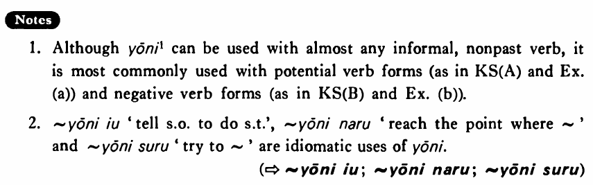

←
DoJG
→
ように (1)
(B. 553)
Example sentences
(ksa).
読める
ように
字を奇麗に書いて下さい。
Please write it neatly so that I can read it.
(ksb).
風邪を引かない
ように
気をつけている・います。
I'm taking care of myself so that I don't catch a cold.
(a).
僕が分かる
ように
スミスさんはゆっくり英語を話してくれた。
Mr. Smith spoke English slowly so that I could understand him.
(b).
遅れない
ように
タクシーで行きました。
I went there by taxi so that I wouldn't be late.
(c).
病気が治る
ように
薬を飲んだ。
I took medicine so that I would recover from illness.
(d).
子供が本を読む
ように
面白そうな本を買って来た。
I bought some interesting-looking books so that my child would read books.
Formation
Vinformal nonpast
{potential/ negative}
ように
{話
せる
/話
さない
}
ように
So that someone can talk/does not talk
{食べ
られる
/食べ
ない
}
ように
So that someone can eat/does not eat
